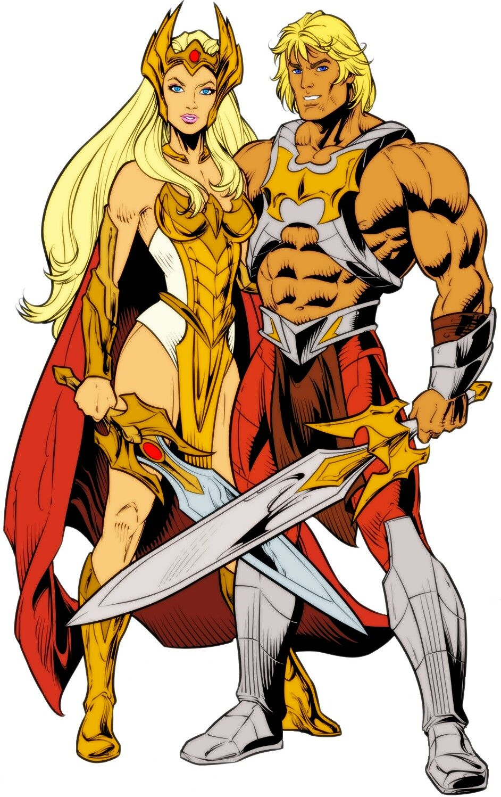

About She-Ra
She-Ra is an awesome warrior princess. She was stolen by the Horde as a baby and raised to be a Horse general. One day she met Glimmer, a member of the resistance and realised the damage the Horde as doing to the land. She then joined the restance and became the warrior princess we all know and love. She is also the sister of He-Man
She-Ra's Characteristics
She-Ra and her Friends
- She is bad-ass
- She fights for justice
- Swift Wind
She-Ra's Friends
She-Ra has lots of friends. Her coolest friend is Swift Wind who is a talking hourse who can fly.